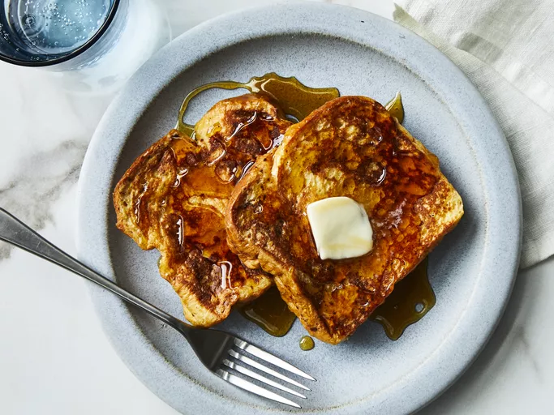

French Toast

Description:
French toast is a popular dish made from sliced bread soaked in a mixture of beaten eggs and often milk or cream, then pan-fried.
It’s known by various names including eggy bread, Bombay toast, gypsy toast, and poor knights (of Windsor).
Ingredients:
- ⅔ cup milk
- 2 large eggs
- 1 teaspoon vanilla extract (Optional)
- ¼ teaspoon ground cinnamon (Optional)
- salt to taste
- 6 thick slices bread
- 1 tablespoon unsalted butter, or more as needed
Steps:
- Gather all ingredients.
- Whisk milk, eggs, vanilla, cinnamon, and salt together in a shallow bowl.
- Lightly butter a griddle or skillet and heat over medium-high heat.
- Dunk bread in the egg mixture, soaking both sides.
- Transfer to the hot skillet and cook until golden, 3 to 4 minutes per side.
- Serve hot.